Розбір публічної сторінки @halynakramarieva станом на 30.10.2026.
Записам заважають три речі: запис веде в канал без контактів, стрічка про бренд і мітка «ШІ» під результатами.
У кожній парі змінено одне. Натисніть на картинку, щоб відкрити весь екран.
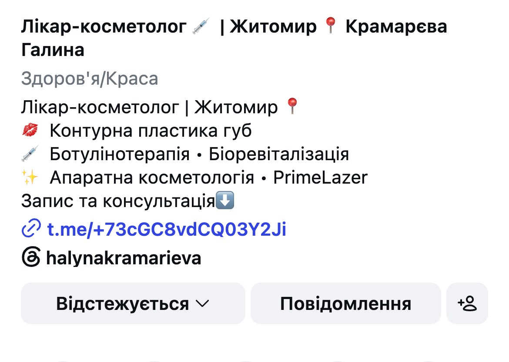
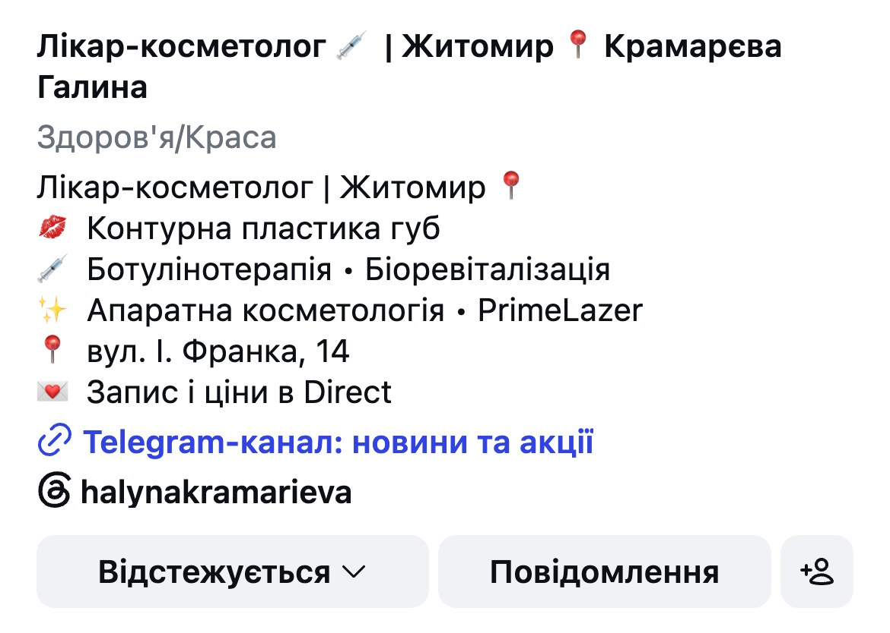
Запис веде в канал без контактів, а в дописах «пишіть у Direct». Варто: одна дія й адреса з вашого допису 23.09.
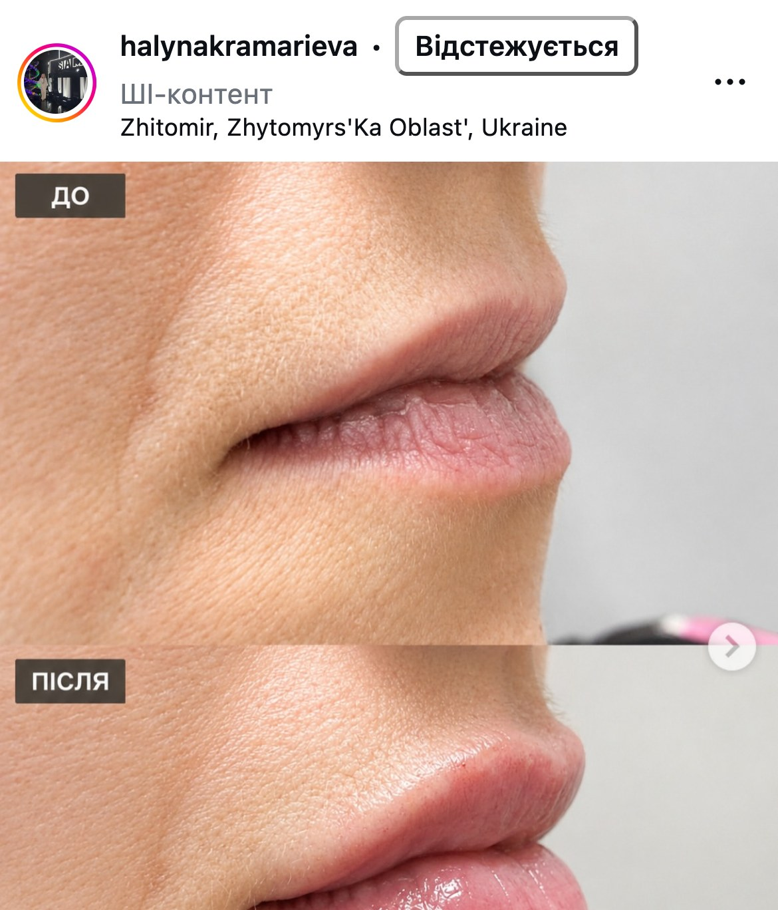
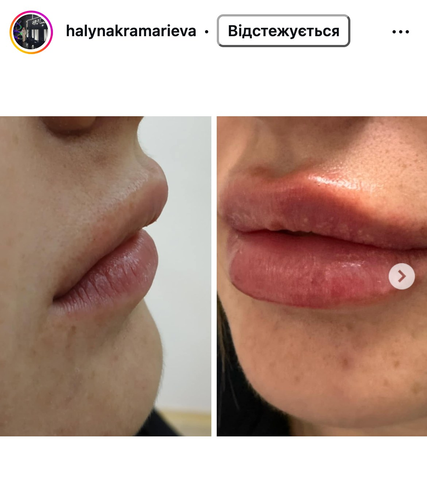
9 дописів позначені «ШІ-контент», серед них «до/після» губ. Ваш справжній «до/після» 2024 року виходить без мітки.
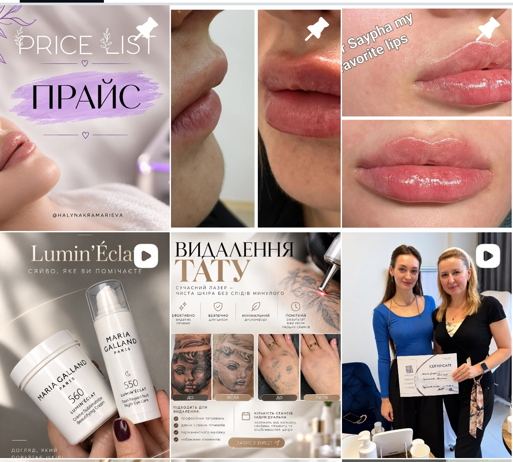
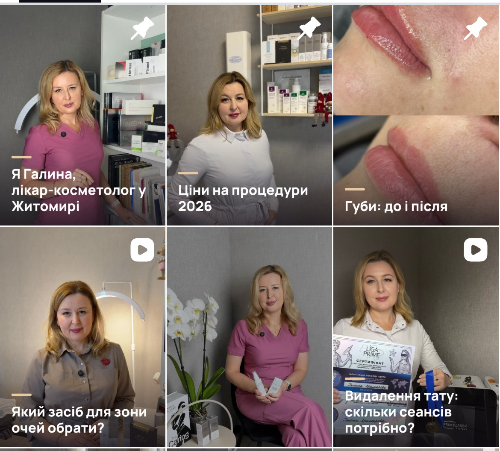
17 з 56 дописів рекламують засоби Maria Galland. Варто: ваш кабінет, процедури з прайсу й однаковий гачок на обкладинках.
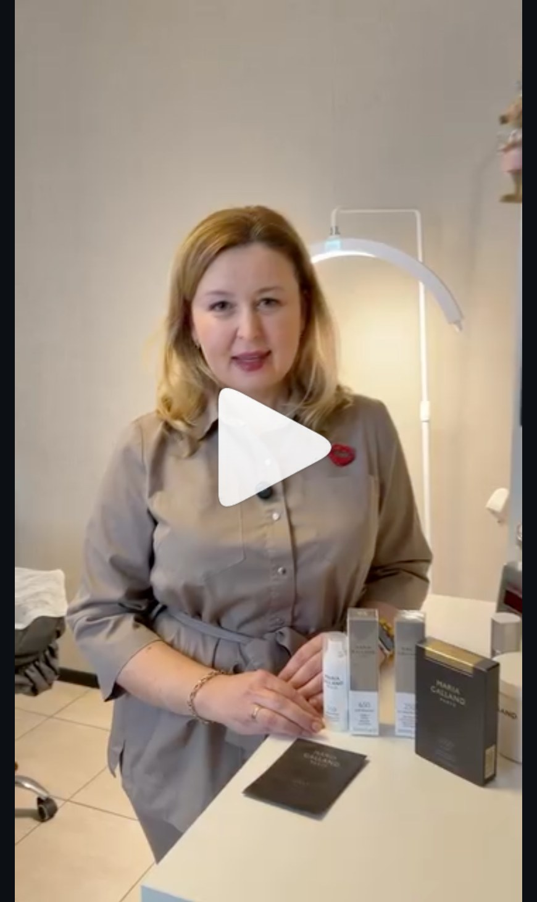
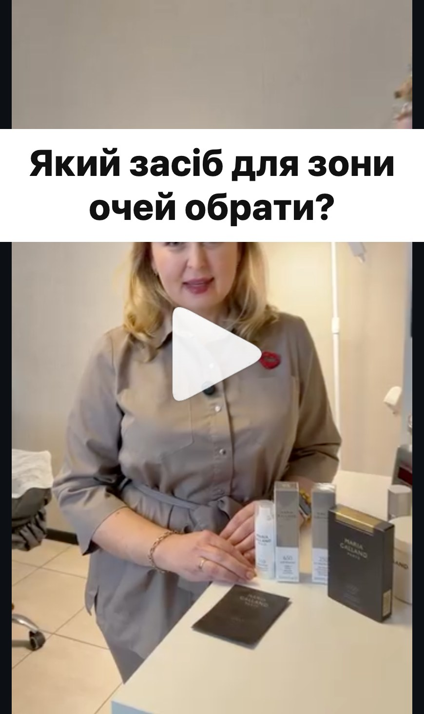
Рілс 10.03 (1 646 переглядів) про засоби для зони очей, але тему видно не одразу. Варто винести ваше питання на перший кадр.
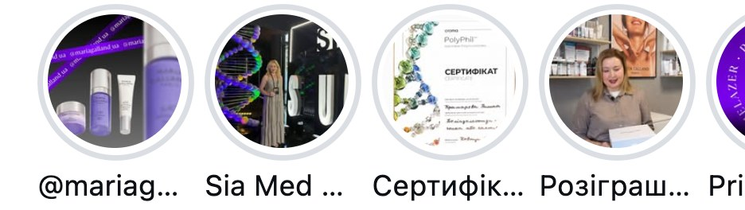
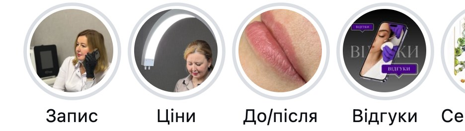
«Відгуки» востаннє оновлені 56 тижнів тому, хайлайтів з цінами й записом немає. Варто: Запис, Ціни, До/після, Відгуки.
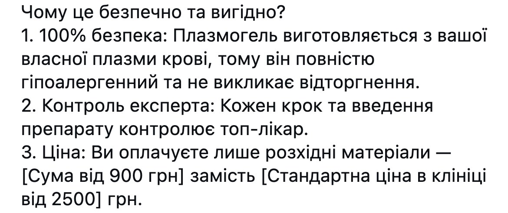
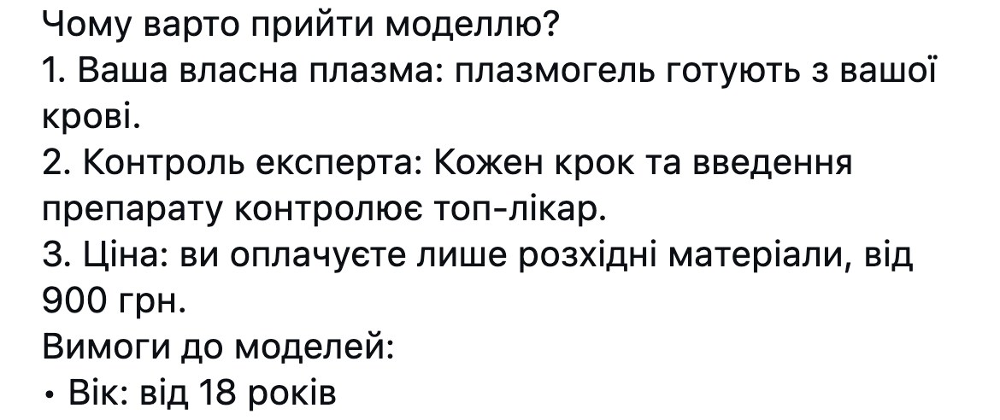
У дописі 23.09 лишились дужки шаблону й «100% безпека». Варто: чистий текст без абсолютних обіцянок.
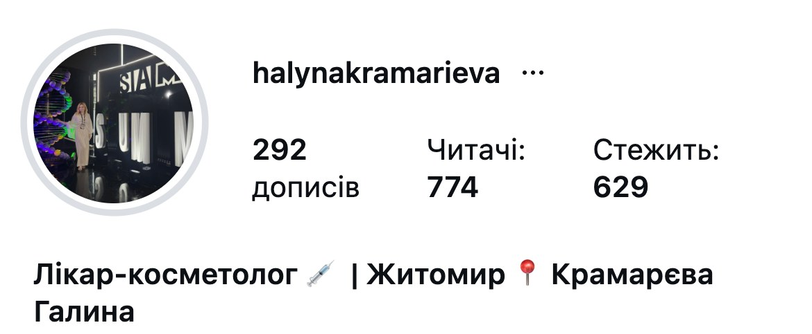
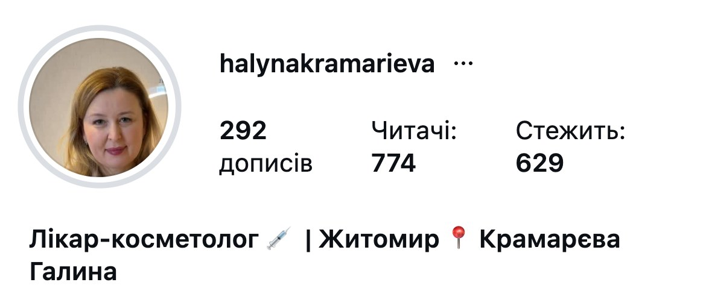
Зараз на аватарі сцена, обличчя в колі не видно. Варто: ваше обличчя крупним планом, кадр з вашого ж рілса.
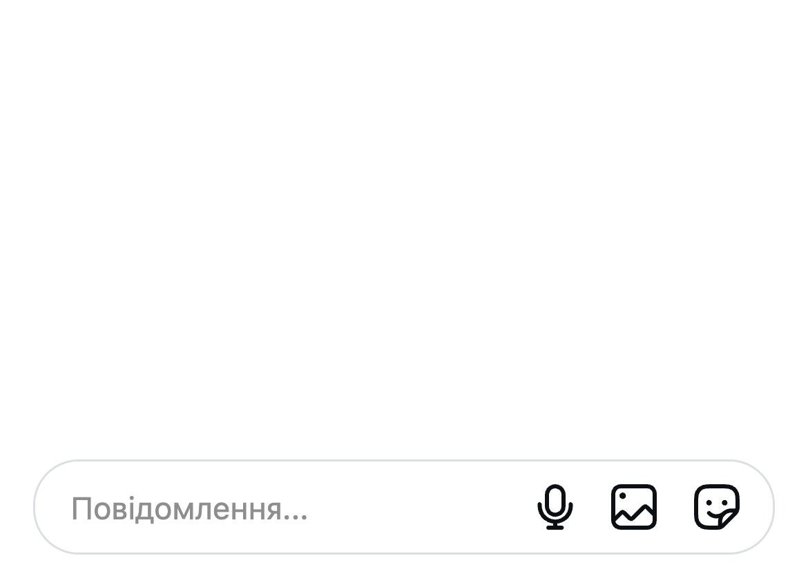
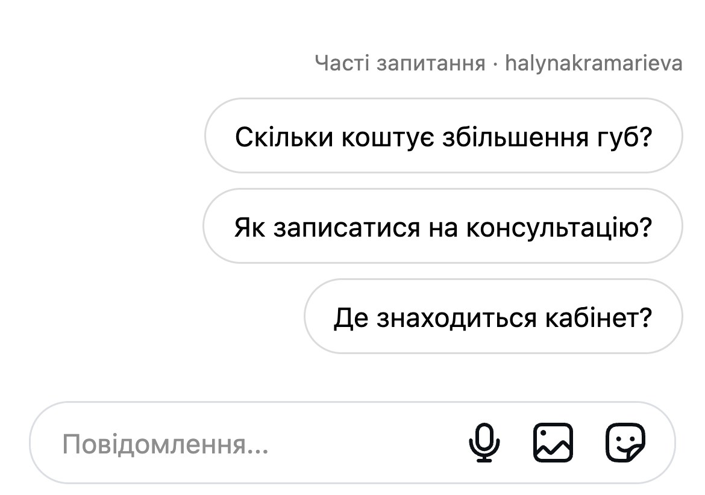
Нова клієнтка бачить порожній чат. Варто увімкнути «Часті запитання»: ціна, запис, адреса. Відповіді підготую за вашим прайсом.
У пошуку Instagram за шістьма запитами («косметолог житомир», #косметологжитомир та інші) у видачі дописи інших косметологів, ваших там немає.
«Один день разом зі мною. Косметолог у Житомирі» (19 682 перегляди) і «Ботокс чи філер? Показую на своєму обличчі» (10 027). У шапці одна дія: «Запис і ціни».
Гачок «Я стала жертвою косметології» (10 470) і процес губ крупним планом (7 304). Амбасадорка Totis Pharma, але стрічка про її процедури.
Відповідає на страхи клієнток: «Ботокс не працює?» про корекцію через 14 днів (4 869). Адреса кабінету прямо в шапці.
Аудиторія як у вас, але за місяць 7 дописів проти ваших 4. Найпопулярніше особисте: відпустка (1 938) і день народження (1 793).
30 хвилин дзвінка: покажу план першого місяця і перші 4 теми для зйомки під ваш прайс.